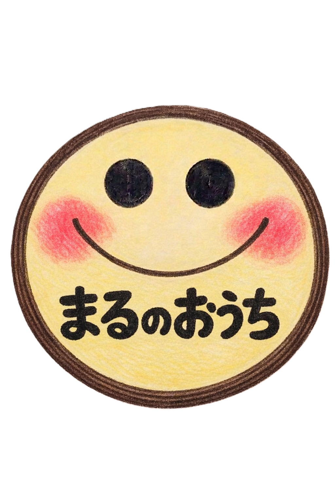
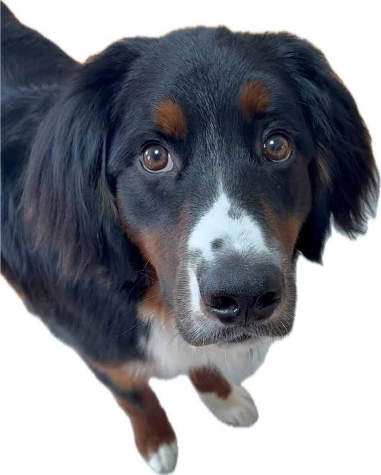

ぼく、ぐり丸！
見守ってるよ☆
見守ってるよ☆
まるのおうちが届ける先生サポート
先生だって、
ひとりで抱え込まなくていい。
授業も、学級も、気持ちも。
一人で抱え込まなくて大丈夫です。
まるのおうちの想い
子どもをまるごと受けとめるように、
先生の悩みも、まるごと受けとめたい。
先生の悩みも、まるごと受けとめたい。
こんなお悩みに
- 授業がうまくいかない
- 学級が落ち着かない
- 相談できる人がいない
- 毎日しんどい
サポートメニュー
🌱 はじめての先生相談
15分／1,000円
まずは少しだけ話してみたい方向け。
悩みがまとまっていなくても大丈夫です。
悩みがまとまっていなくても大丈夫です。
📘 授業ふり返りサポート
60分／5,000円
授業の流れや子どもの反応をもとに、良かったところと次に意識するとよいところを整理します。
ダメ出しではなく、先生自身が次に進めるためのふり返りです。
ダメ出しではなく、先生自身が次に進めるためのふり返りです。
🏫 学級経営もやもや整理
45分／3,500円
クラスが落ち着かない、子どもとの関わり方に迷う、注意がうまく届かない。
そんな学級経営のもやもやを一緒にほどいていきます。
そんな学級経営のもやもやを一緒にほどいていきます。
☕ 先生のための面談
30分／2,500円
しんどさ、不安、自信のなさ、辞めたい気持ち。
安心して気持ちを出せる時間です。
安心して気持ちを出せる時間です。